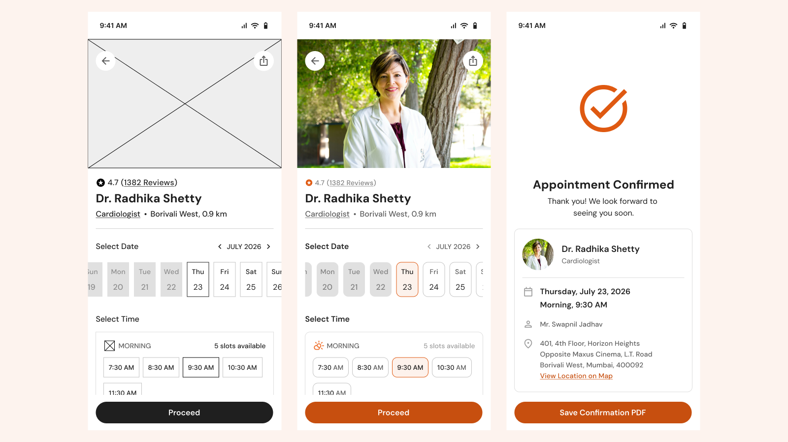
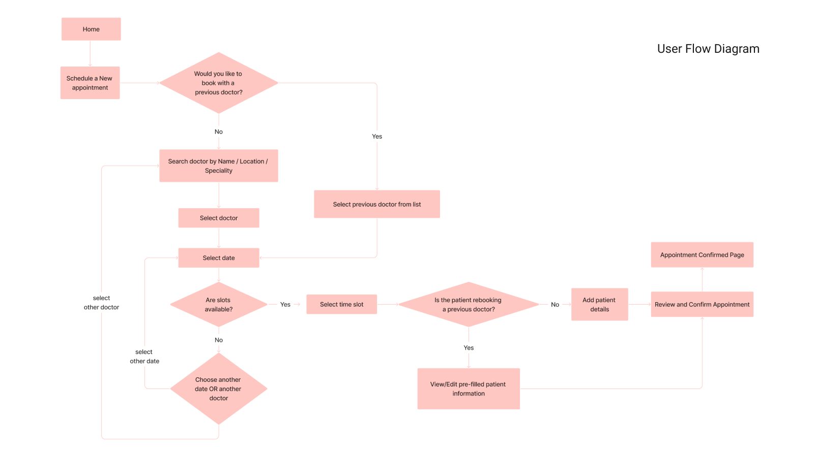
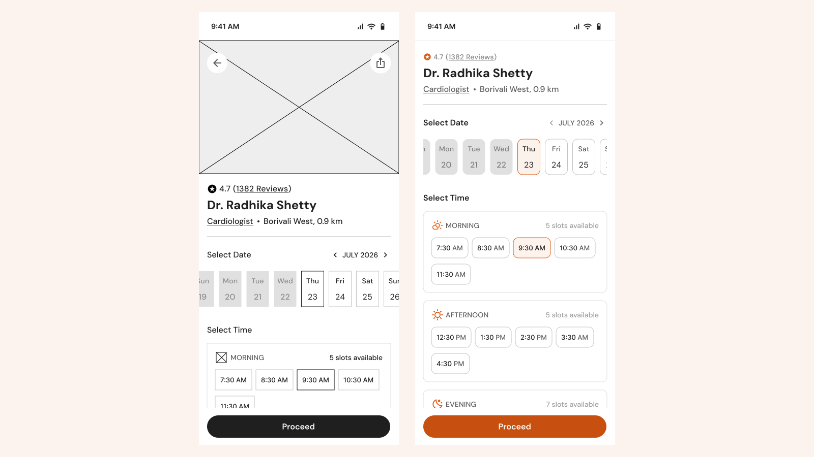

Making healthcare appointments easier to book.
A simple appointment-booking experience designed around accessibility, clear availability and an easy-to-follow flow for patients, including elderly users.

A focused appointment-booking exercise
This project started as a design assignment for a healthcare appointment system. I focused on a simple flow for booking a time slot with a selected doctor, while considering elderly users as an important audience.
This influenced the interaction choices, touch-target sizes, visual hierarchy and overall simplicity of the experience.
Keep the booking journey focused
The flow keeps the task straightforward: select a date, choose an available time and confirm the appointment.

Make available times easy to see and choose
The doctor page brings together key information such as specialization, rating, location and availability. Once the doctor is selected, patients can move directly into choosing a date and time.
A simple date slider makes it easy to move between days. Available slots are shown directly on the page and grouped into Morning, Afternoon, Evening and Night, rather than hiding them behind tabs or accordions.
Unavailable slots are visibly disabled, making it clear which times can be selected.

Simple, accessible and easy to scan
Designing with elderly users in mind meant being intentional about touch targets, hierarchy and the amount of interaction required to complete the task.
Comfortable touch targets
Larger interaction areas make dates and slots easier to select.
Availability at a glance
Available and unavailable times are clearly differentiated without extra interactions.
Minimal visual language
A clean layout with a warm terracotta accent keeps the experience approachable and focused.
From selecting a slot to a clear confirmation
The final flow keeps the booking experience short and focused, taking the patient from selecting an available slot to a clear appointment confirmation.
A patient-information step would sit between slot selection and confirmation in a complete product, but was outside the scope of this assignment.